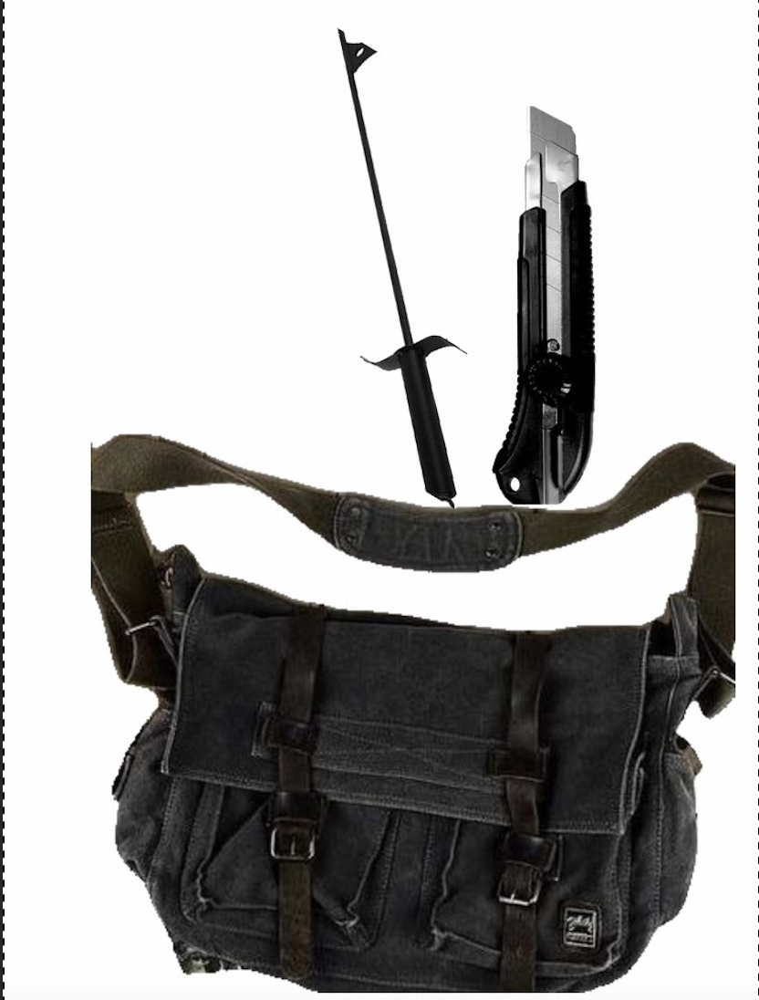

Looking around your living room you find the fireplace poker and set it down on the ground. Looking around further you find a backpack you used for years. You put the poker inside and continue searching finding an exacto knife. You decide that enough and pack both in your bag.